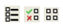

Session Window in Calibre RVE for PERC
The following figure shows a typical view after opening a Calibre PERC database in Calibre RVE.
The run status is indicated with the tab icon as follows:
|
Clean (Results Tab) |
|
Errors (Results Tab) |
|
Aborted (Results Tab) |
PERC Info Results Tab |
The following icons are used in the PERC Results tab:
|
Error |
|
Waived result |
|
Top cell |
|
Clean check or cell |
|
Check aborted |
The following buttons are available:
|
|
|
 |
Result View Format |
The display for a Calibre PERC LDL database is somewhat different than that shown in Figure 1, especially in the Result Data Pane, the methods for highlighting, and some of the menu options. See “Viewing Calibre PERC LDL Results in Calibre RVE” for more information.
The following table describes the areas in the session window.
Area |
Description |
|---|---|
Toolbar |
See Standard Toolbar in Calibre RVE and Toolbars in Calibre RVE for PERC. |
Provides easy navigation to the available report tabs, files, and tools. Selections are duplicated in the View menu. |
|
Report Tab |
Tabbed view of results. See “PERC Results Tab” and “PERC Info Results Tab” in the reference section. If the Calibre PERC run included layout netlist extraction, the Extraction Results Tab may be present. See “Viewing Calibre PERC LDL Results in Calibre RVE” for information on the report tab for Calibre PERC LDL results. |
Tree View |
A tree view of the results.
Choose viewing options with View
> Tree Options, or use the Group By button
( |
Result View |
The Result View lists all the results for the checks selected in the Tree View. You can choose the format of the Result View with the menu selection View > Result Options, or with the icon at the top far right of the report tab. |
Result Data |
The Result Data Pane displays the description of the result. You can click an item in blue font to highlight it, or right-click for a highlight menu. The Result Data Pane is enabled with View > Result Options > Result Data Pane. |
Check Text Pane |
Displays the comment text for the rule check selected in the Tree View. Turn the display of this area on and off with View > Check Text Pane. |
When you close the database or exit Calibre RVE, the display options are automatically saved; the settings are restored the next time you open the database. You can also save the current view configuration as a bookmark, as described in “Bookmarks for Result Tab Views in Calibre RVE for PERC”.
If PERC Report Option SKIP_WAIVED_RESULT is specified in the rule file for a Calibre PERC run, the database does not include results that are waived as part of the Topology Waiver Application.